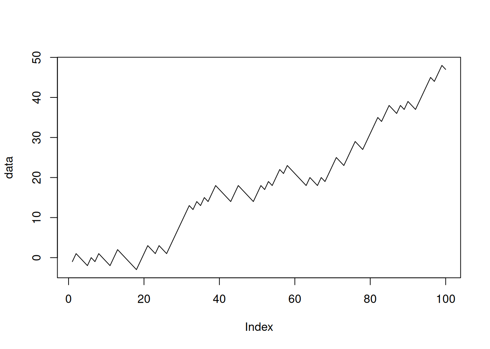
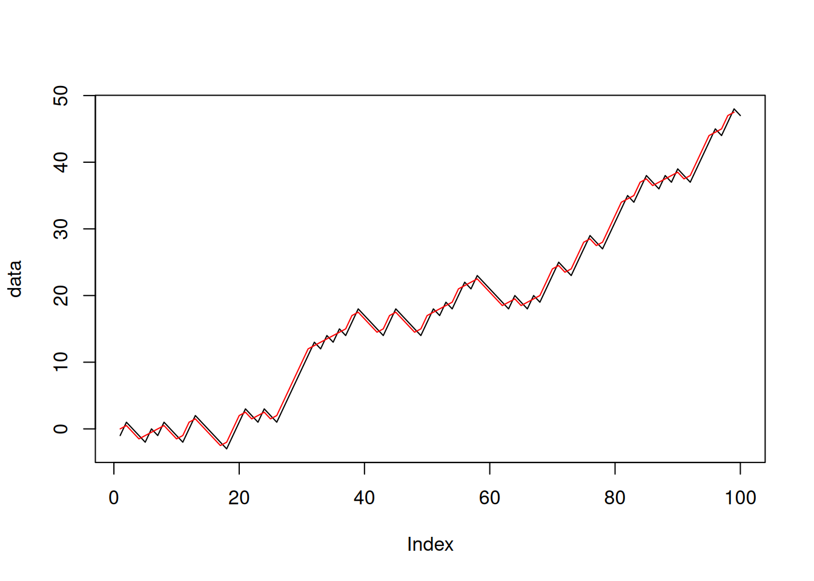

i <- 1
cat(i,i^2,"\n")1 1 i <- i+1
cat(i,i^2, "\n")2 4 i <- i+1
cat(i,i^2, "\n")3 9 Repetition (also known as “loops”) are another fundamental structure of all programming languages.
Repetition, like decision, requires a condition to execute a block of code. However, unlike decision, at the end of the block it checks the condition again. If the condition still holds, the block is executed again.
Simple example: Print the squares of 1, 2, … 10.
Without loops, it would be cumbersome:
i <- 1
cat(i,i^2,"\n")1 1 i <- i+1
cat(i,i^2, "\n")2 4 i <- i+1
cat(i,i^2, "\n")3 9 With loops, it is shorter and more flexible:
i <- 1 # initialization
while (i<=10) { # condition
cat(i,i^2,"\n")
i <- i+1 # update
}1 1
2 4
3 9
4 16
5 25
6 36
7 49
8 64
9 81
10 100 while loop<initialization>
while( <condition> ) {
<statements>
<update variables>
}<condition> is a Boolean expression, usually involving existing variables.<condition> is true the block is executed (this is called one iteration).i <- 1 # initialization
while (i<=10) { # condition
cat(i,i^2,"\n")
i <- i+1 # update
}1 1
2 4
3 9
4 16
5 25
6 36
7 49
8 64
9 81
10 100 Find the sum of elements in a vector
Without a loop:
mydata <- c(-1,4,2,5,1,4,6,2,0)
total <- 0
i <- 1
total <- total + mydata[i]
i <- i+1
total <- total + mydata[i]
i <- i+1
total <- total + mydata[i]
#...With a loop
mydata <- c(-1,4,2,5,1,4,6,2,0)
total <- 0
i <- 1
while (i<=length(mydata)){
total <- total + mydata[i]
cat(i, mydata[i], total, "\n")
i <- i + 1
}1 -1 -1
2 4 3
3 2 5
4 5 10
5 1 11
6 4 15
7 6 21
8 2 23
9 0 23 total[1] 23Find the maximum element in a vector
mydata <- c(1,4,2,5,1,4,6,2,0,7,3,1)
largest <- mydata[1]
i <- 2
while (i<=length(mydata)){
if(mydata[i]>largest)
largest <- mydata[i]
i <- i + 1
}
largest[1] 7while that does not take a Boolean condition.for statement takes elements from a vector one by one, and runs the loop body with the current element.for(i in c(2,-1,5,3,7)) {
cat(i,i^2,"\n")
}2 4
-1 1
5 25
3 9
7 49 In many cases for is simpler than while, especially when you need to iterate over the elements of a vector.
Note that by using for you don’t need to keep track of the element index. This is OK if you are interested in the element values only, but it might not work if the element’s location is relevant.
break statementWhen the program encounters a break statement, it terminates the loop. The remainder of the block is skipped over.
i <- 1
while(i<=10){
if(i==7)
break
cat("i =",i,"\n")
i <- i+1
}i = 1
i = 2
i = 3
i = 4
i = 5
i = 6 cat("Goodbye")GoodbyeSame with a for loop
for(i in 1:10){
if (i==7)
break
cat("i =",i,"\n")
}i = 1
i = 2
i = 3
i = 4
i = 5
i = 6 next statementi<-0
while(i<=10){
i <- i+1
if( i%%3==0 )
next
cat(i, "")
}1 2 4 5 7 8 10 11 Caution: If the update statement is located after next, the loop may not terminate.
i<-1
while(i<=10){
if( i%%3==0 )
next
cat(i, "")
i <- i+1
}repeat looprepeat statement provides an infinite loop.break.i <- 1
repeat {
i <- i + 3
cat(i,"")
if(i>10) break
}4 7 10 13 The next statement works in the same way in repeat loops.
i <- -2
repeat {
i <- i + 1
if (i%%3==0) next
cat(i,"")
if(i>10) break
}-1 1 2 4 5 7 8 10 11 ::: {.callout-tip} ### Which type of loop should I use?
while is the most general one.repeat is the same as while(TRUE).for is more convenient when going over sequences such as vectors. ###A loop body can contain anything, including other loops.
for (i in 1:4) {
cat("i =",i,"\n")
for (j in c(7,8,9))
cat(" i+j =",i+j,"\n")
}i = 1
i+j = 8
i+j = 9
i+j = 10
i = 2
i+j = 9
i+j = 10
i+j = 11
i = 3
i+j = 10
i+j = 11
i+j = 12
i = 4
i+j = 11
i+j = 12
i+j = 13 x <- c(1,2,3)
y <- c(4,5,6)
z <- x + y
z[1] 5 7 9Alternative way by using a for loop
z <- vector(length=length(x))
for(i in 1:length(x))
z[i] <- x[i] + y[i]
z[1] 5 7 9Let’s measure the time that the computer takes for each operation. We use large vectors so that we can see the time difference clearly.
x <- runif(1000000)
y <- runif(1000000)
system.time(z <- x+y) # Time taken by vectorized addition user system elapsed
0.004 0.015 0.018 z <- vector(length=1000000)
system.time(for(i in 1:length(x)) z[i] <- x[i] + y[i]) # time taken by explicit loop. user system elapsed
0.305 0.016 0.321 for() loop, the : operator, the index operator [ are all function calls, which slows the code.Moving averages are a way to reduce fluctuations in data. For example, the 2-element sample moving average of a vector \(v\) with \(n\) elements is defined as
\[ \left(\frac{v_1+v_2}{2},\frac{v_2+v_3}{2},\frac{v_3+v_4}{2}, \ldots, \frac{v_{n-1}+v_n}{2}\right)\]
Let’s generate some synthetic data with an upward trend and some random noise.
data <- cumsum(sample(c(-1,2),size = 100, replace=TRUE))
plot(data, type="l")
movav <- vector(length=length(data)-1)
for(i in 1:length(data)-1)
movav[i] <- (data[i] + data[i+1])/2plot(data, type="l")
lines(movav, col="red")
Implement this in vectorized form:
movav <- (data[1:length(data)-1] + data[2:length(data)])/2A Fibonacci sequence starts with 1 and 1, and each new value is the sum of the two previous values. Formally: \[\begin{eqnarray} F_1 &=& 1\\ F_2 &=& 1\\ F_{n} &=& F_{n-1} + F_{n-2} \end{eqnarray}\]
Each number in this sequence is called a Fibonacci number. Let us write R code that displays the first 20 Fibonacci numbers.
f1 <- 1
f2 <- 1
for (i in 3:20){
temp <- f1
f1 <- f2
f2 <- f2 + temp
cat(f2,"\n")
}2
3
5
8
13
21
34
55
89
144
233
377
610
987
1597
2584
4181
6765 account_balance <- 10000
interest_rate <- 0.1
years <- 10
balance_vec <- account_balance
for (y in 1:years){
account_balance <- account_balance * (1+interest_rate)
balance_vec <- c(balance_vec, account_balance)
cat("After",y,"years your account balance is",account_balance,"\n")
}After 1 years your account balance is 11000
After 2 years your account balance is 12100
After 3 years your account balance is 13310
After 4 years your account balance is 14641
After 5 years your account balance is 16105.1
After 6 years your account balance is 17715.61
After 7 years your account balance is 19487.17
After 8 years your account balance is 21435.89
After 9 years your account balance is 23579.48
After 10 years your account balance is 25937.42 Evaluate the sum \[\sum_{i=1}^{n} 2^{-i} = \frac{1}{2} + \frac{1}{4} +\ldots + \frac{1}{2^n}\] for given \(n\).
n <- 5
total <- 0
for (i in 1:n) {
total <- total + 1/2^i
}
total[1] 0.96875As \(n\rightarrow\infty\), the sum must approach 1. To see this, let us wrap another loop around the code to change n.
for (n in 2:20){
total <- 0
for (i in 1:n) {
total <- total + 1/2^i
}
cat("n =",n,", series total =",total,"\n")
}n = 2 , series total = 0.75
n = 3 , series total = 0.875
n = 4 , series total = 0.9375
n = 5 , series total = 0.96875
n = 6 , series total = 0.984375
n = 7 , series total = 0.9921875
n = 8 , series total = 0.9960938
n = 9 , series total = 0.9980469
n = 10 , series total = 0.9990234
n = 11 , series total = 0.9995117
n = 12 , series total = 0.9997559
n = 13 , series total = 0.9998779
n = 14 , series total = 0.999939
n = 15 , series total = 0.9999695
n = 16 , series total = 0.9999847
n = 17 , series total = 0.9999924
n = 18 , series total = 0.9999962
n = 19 , series total = 0.9999981
n = 20 , series total = 0.999999 sum and cumsumImplement the sum() and cumsum() functions using R’s loop structures. Test your functions with some simple cases to ensure that they work correctly. Using random vectors of size 1,000,000 as input, compare their speed with the built-in versions.
Write a function digits(x) that takes a positive integer and returns a vector of its digits. For example, digits(0667230) should return the vector (6,6,7,2,3,0).
Write a function named digitsum which takes a positive integer and returns the sum of digits (the “digital sum”) of the input. For example, the function call digitsum(35274) should return 3+5+2+7+4=21.
Using this function, find the number between 1 and 1 million that has the largest digital sum.
Currently there are 1,000,000 inhabitants in city A, and 500,000 in city B. Each year, 2% of people in city A move to city B, and 3% of people in city A move to city B. The intrinsic growth rate of both cities is 1% (i.e., the growth in the absence of any migration).
Plot the population of both cities for the next 20 years.
The Collatz sequence is defined as follows:
For example, starting with 10, the Collatz sequence is 10, 5, 16, 8, 4, 2, 1. The number of steps required to reach 1 is 6.
It is believed that for any starting point the sequence ends with 1. However, this is not proven.
collatzlen(n) that returns the number of steps required to go from n to 1 in a Collatz sequence. For example, collatzlen(10) should return 6.